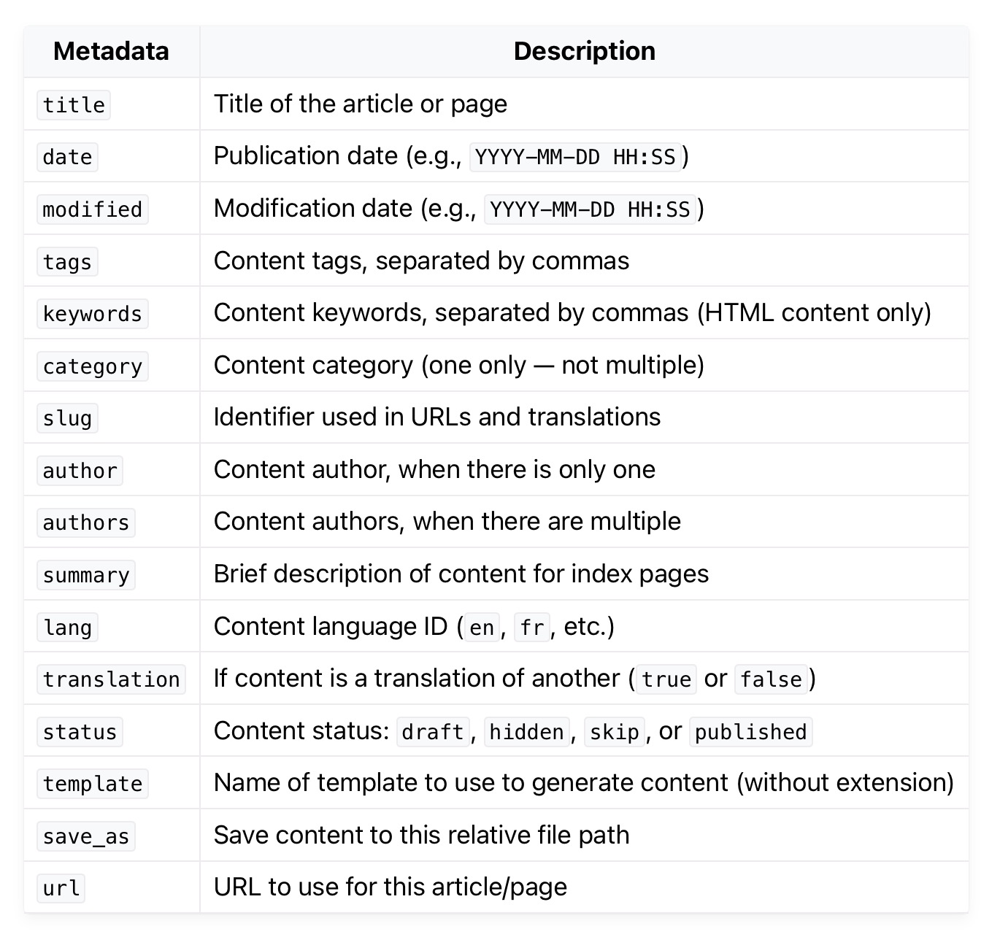

My 2nd Post これは私の２番目の投稿です。 Pelicanのメタデータについて  以上の中から必要に応じて使用します。 Pelicanのメタデータとその利点 Pelicanでは、Markdownファイルの先頭にTitleやDateといった「メタデータ」を記述します。これらは記 … read more
My 3rd Post これは私の３番目の投稿です。 以下は、サイトのビルド方法です。 サイトの公開手順 このプロジェクトでは、コンテンツをビルドし、GitHubにプッシュすることでCloudflare Pagesに自動でデプロイする流れを想定しています … read more
My First Post これは私の最初の投稿です。 なぜ Pelican を使うのか PelicanはPython製の静的サイトジェネレーターで、以下のような多くの利点があります。 高速でセキュア: データベース … read more